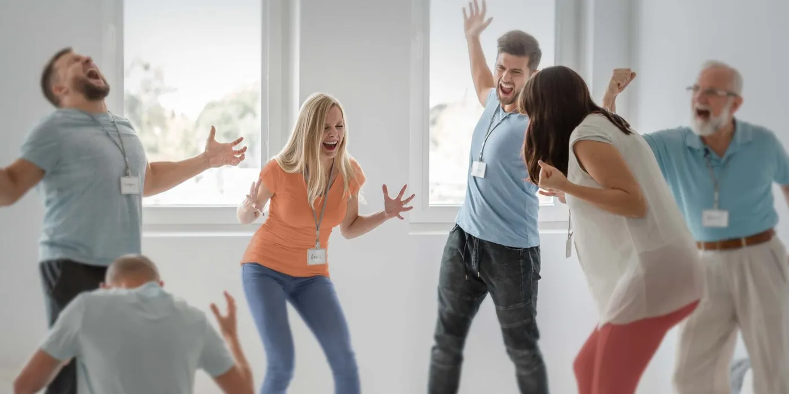

Soul-Led Healing
A sacred session to release, restore and come home to yourself.
Read moreUniversal Healing · Oakville, ON
Realign, restore and reconnect with Lisa Marie Gauder. Soul-led healing, readings and frequency work, in Oakville or online.
Every session unfolds uniquely, guided by what your energy reveals.
A sacred session to release, restore and come home to yourself.
Read moreYour energy, read and put into clear, kind language.
Read moreBody, mind, heart and soul, met together.
Read more
Awaken your inner healer in sacred community.
Read moreEmbodied Truth Leader & Soul Evolution Guide
Lisa's work feels grounded, warm, honest and deeply safe. A place where the noise quiets and the next step feels simple again.
Lisa's own essential oil blends. $20 each.
Book online, or begin with a complimentary 30-minute Soul-Led Discovery Call. Love and light.